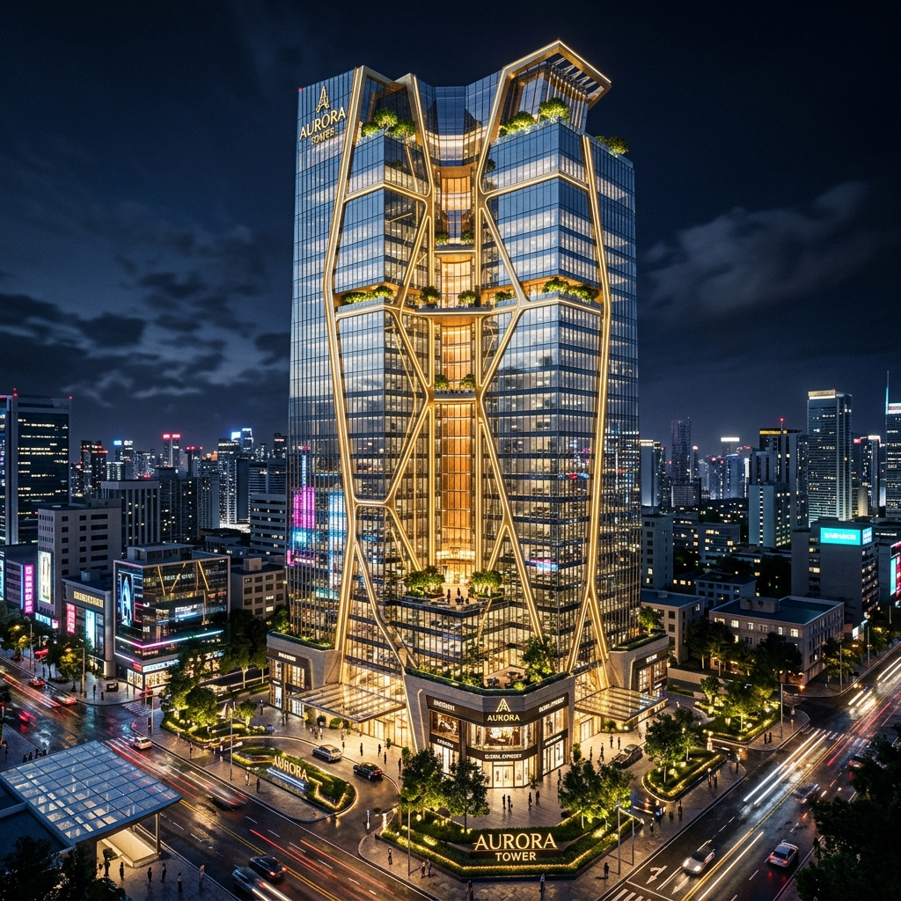
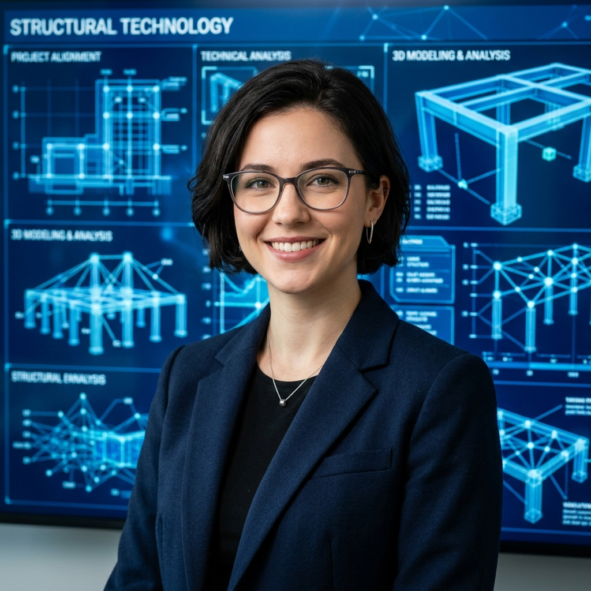
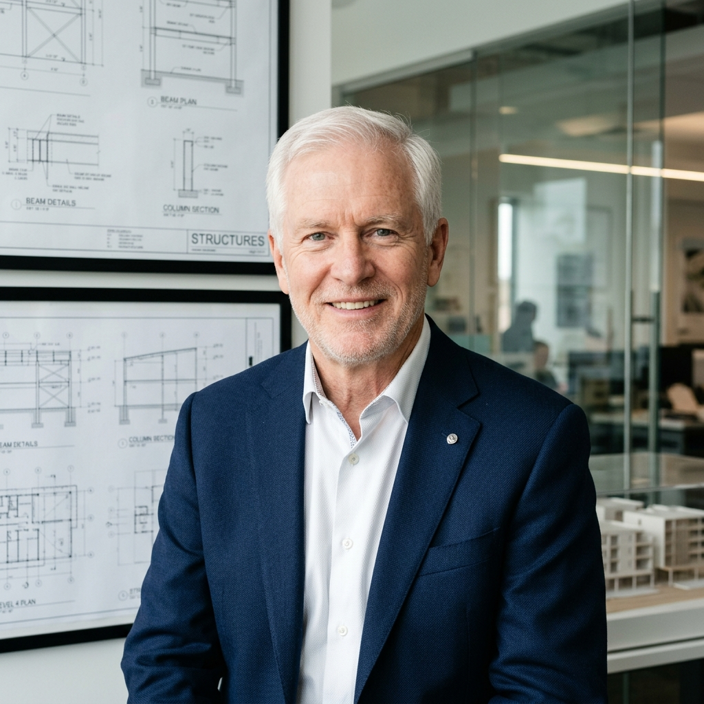

Architects of Digital Reality

TwinAnalytic stands at the intersection of luxury architectural design and cutting-edge digital twin technology. We design and coordinate projects ranging from high-rise office towers to massive structural transport grids, ensuring that physical structures remain optimized, secure, and predictable throughout their lifecycles.
By using Building Information Modeling (BIM) at Level 3, we allow all engineering design disciplines to interface in real-time, removing clashes and reducing construction material waste. Once structural execution is complete, our physical buildings transition into live digital twins, using real-time IoT sensor telemetry to feed continuous structural data back to dashboards.
We model elements down to LOD 500, resolving structural clashes in the software phase to prevent expensive physical rework.
By testing materials and load parameters, we generate sustainable, material-efficient structural shapes that save resources.
We fuse construction with software engineering, creating live, IoT-connected models that watch over building health continuously.
TwinAnalytic was established in Frankfurt, offering high-fidelity finite element analysis (FEA) to developers of complex landmarks.
Integrated 3D coordination modeling workflows across MEP, structure, and architecture, reducing project delivery delays by 20%.
Launched our cloud BIM Level 3 platform and connected real-time strain-gauge data to structural models for bridges and skyscrapers.
Our leadership blends computational geometry, structural engineering, and luxury architecture design execution.

